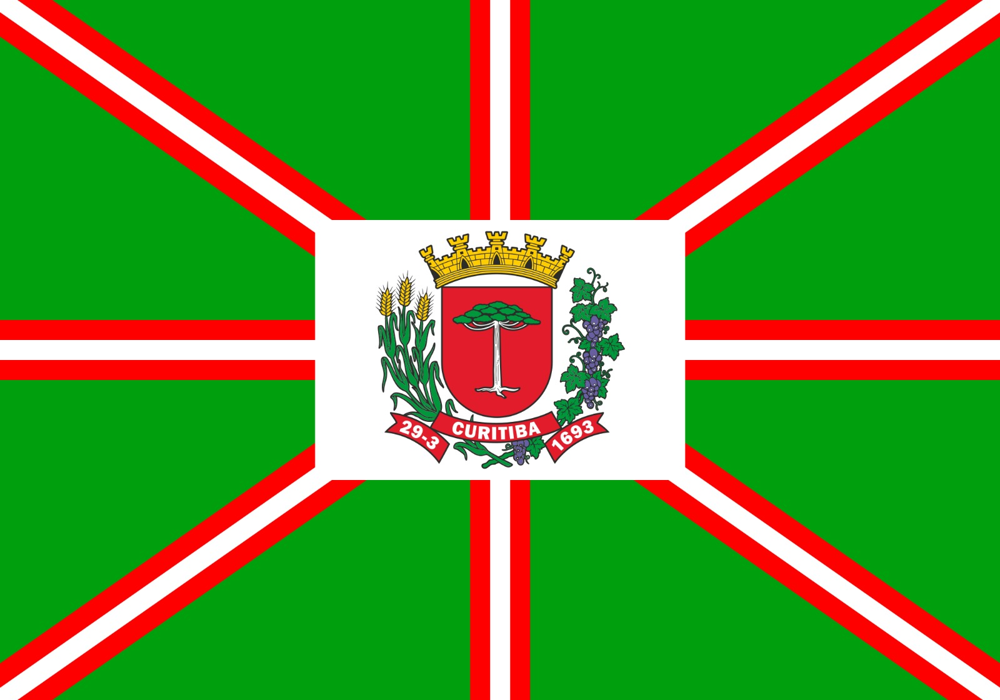
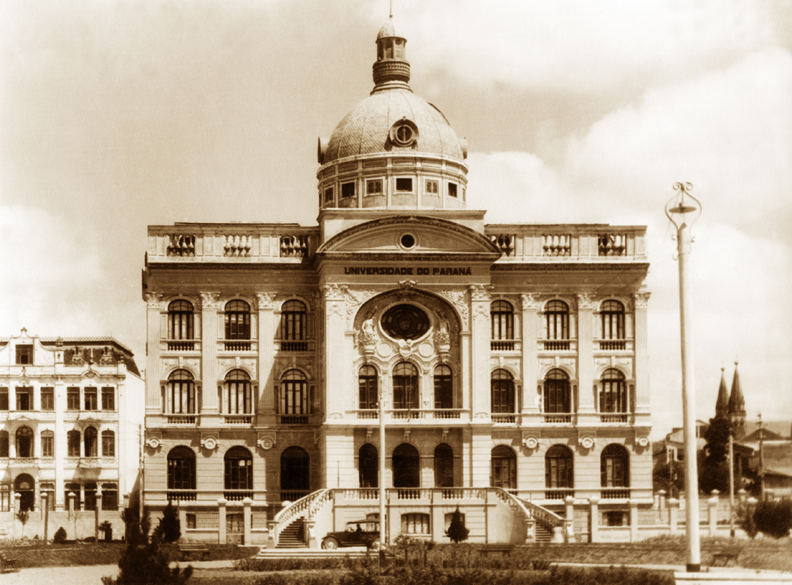
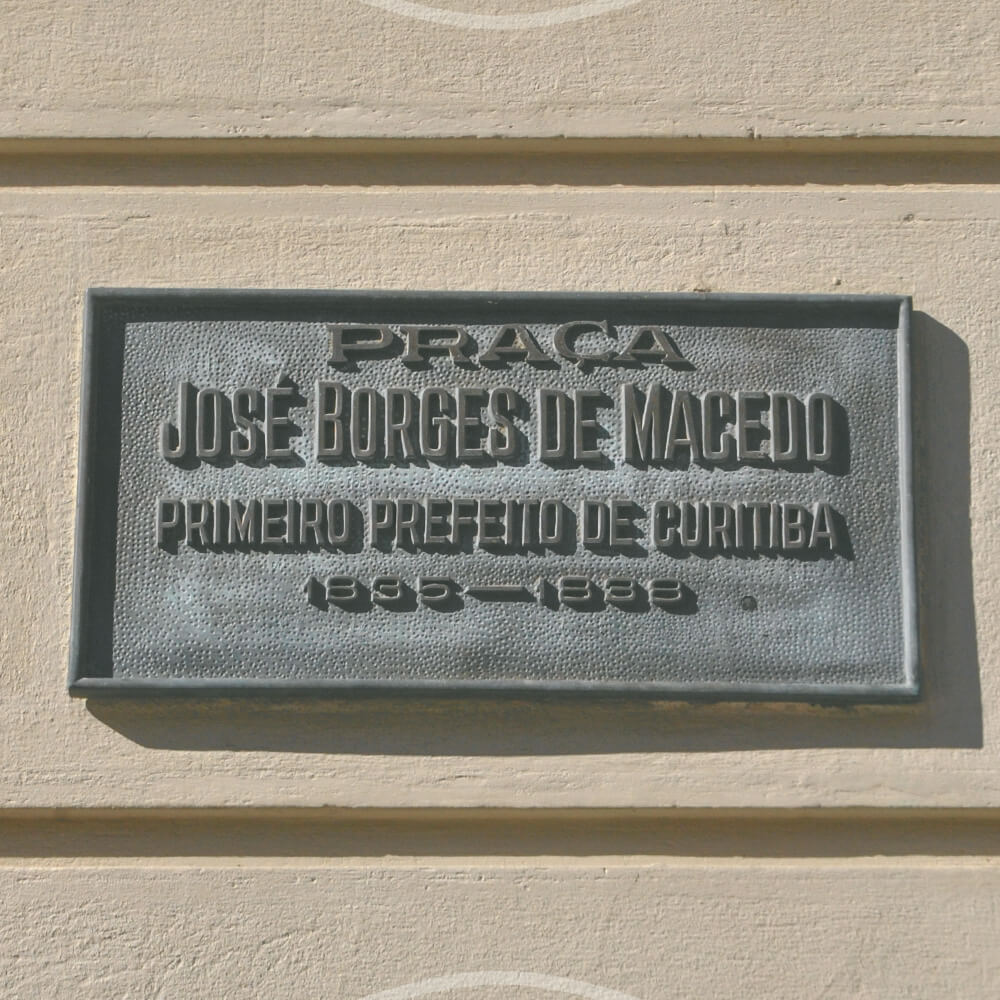

História de Curitiba

Introdução
Bem-vindo(a) a Curitiba, a cidade que encanta com sua harmonia entre modernidade e preservação ambiental! Conhecida como uma das capitais mais verdes do Brasil, Curitiba é um verdadeiro exemplo de planejamento urbano e qualidade de vida. Aninhada no sul do país, essa metrópole paranaense oferece uma mistura única de cultura, arquitetura e natureza exuberante.
Uma das características mais marcantes de Curitiba é seu inovador sistema de transporte público. O famoso BRT - Bus Rapid Transit - , que combina ônibus de alta capacidade com estações modernas, tornou-se um modelo internacional de eficiência e sustentabilidade. Além disso, a cidade possui um extenso circuito de ciclovias, edifícios históricos e parques bem cuidados, convidando moradores e visitantes a explorarem suas belezas naturais e urbanas de forma ativa.
A cidade é conhecida por sua população criativa e engajada em projetos comunitários. Um exemplo disso é o "Largo da Ordem", onde artistas locais se reúnem para expor seus trabalhos e promover a cultura regional. Essa energia entusiasta e colaborativa faz de Curitiba um lugar verdadeiramente único, onde a inovação e a tradição encontram-se em excelente equilíbrio. Sendo assim, prepare-se para se surpreender a cada esquina nesta cidade cativante e acolhedora do sul do Brasil!
História do Nome
Existem diferentes versões sobre o significado da palavra "Curitiba", porém, uma das mais aceitas é que ela deriva da junção dos termos "curi" e "tiba". "Curi" significa "pinhão", enquanto "tiba" pode ser traduzido como "muito" e "grande quantidade". Portanto, "Curitiba" seria algo como "lugar onde há muitos pinhões".
A palavra Curitiba pode variar. Um dos significados vem de origem Guarani: kur yt yba quer dizer "grande quantidade de pinheiros, pinheiral", na linguagem dos índios, primeiros habitantes do território.
A cidade de Curitiba foi fundada em 1693, com o nome Nossa Senhora da Luz dos Pinhais. O nome Curitiba foi implantado somente a partir de 1721.
Independente do significado exato do nome "Curitiba", ele é ligado à rica cultura e história dos povos indígenas que habitavam a região antes da chegada dos colonizadores europeus. Nas duas possibilidades, o pinhão, fruto do pinheiro-do-paraná está diretamente ligado à origem do nome de Curitiba.
História da Bandeira
A bandeira de Curitiba data de 11 de maio de 1967, seguindo a lei municipal nº 2993/1967, juntamente com o hino e o brasão da capital. Na época da confecção da bandeira, vários artistas foram reunidos para chegar na forma e nas cores usadas.
Algumas das convenções elaboradas ditam que a bandeira deveria seguir as dimensões da Bandeira Nacional (levando-se em consideração nove módulos de altura por treze de comprimento.), ser oitavada em figuras geométricas trapezoidais, com oito faixas vermelhas, oito faixas brancas e o brasão municipal.
O brasão, disposto no centro da bandeira, simboliza o Governa Municipal e o retângulo no qual é aplicado representa a cidade sede do Município. As faixas trazem o Poder Municipal expandindo-se a todos os quadrantes do território. Já as oitavas simbolizam as propriedades rurais existentes nos limites da cidade.
A oficialização ocorreu durante a gestão do prefeito Omar Sabbag, respeitando as regras da heráldica e sendo, portanto, um dos símbolos oficiais do município.
A Primeira Escola e Primeira Universidade
A primeira escola de Curitiba ficou conhecida como Escola Pública do Paraná, principalmente por conta da educação primária que oferecia. Desde 1836, seu serviço fornecido foi de fundamental importância para a formação dos habitantes daquele tempo.
Toda sua fundação ocorreu por meio do presidente da, ainda província, São Paulo. Foi um projeto focado em crianças que pertenciam a famílias em condições de baixa renda.
Já a primeira instituição de ensino superior foi fundada no fim de 1912. A Universidade tinha planos de ser fundamentada duas décadas antes, porém a instabilidade gerada pelas revoluções não permitiu.
A UFPR passou por períodos conturbados por ter sobrevivido durante a Primeira Guerra com problemas de recessão econômica. Porém, dando a volta por cima graças aos seus coordenadores, hoje é a mais antiga Universidade de Curitiba e também de todo o Brasil.
História do Primeiro Prefeito
Durante a história de Curitiba houveram diversos prefeitos. Aqui iremos comentar sobre um dos mais impactantes na nossa história, o primeiro prefeito de Curitiba.
José Borges de Macedo (1791-1851) nasceu e cresceu na cidade de Castro (interior do Paraná). Filho do capitão Cirino de Borges e d. Rosa Maria e Silva, José teve muita representação política pelo seu pai que foi camarista da cidade em várias oportunidades entre os anos de 1795 a 1800.
No ano de 1814, José foi eleito vereador da Câmara Municipal de Castro, e algum tempo depois ele começou a morar em Curitiba.
Durante sua estadia em Curitiba, José Borges exerceu diversos cargos públicos ao mesmo tempo que possuiu um comércio de secos e molhados. O local do comércio hoje é conhecido como “Casa vermelha” localizada no Largo da Ordem.
Em 20 de março de 1819, José foi nomeado na condição de Procurador da Câmara Municipal, essa foi sua primeira atividade pública em Curitiba. Em 1833, José assumiu o cargo de Juiz de Paz, e logo depois, entre 1833 a 1935, ele fez parte de uma comissão que delimitou as divisas das cidades de Campo Largo, Curitiba e Palmeira.
Em 21 de julho de 1835, a Câmara Municipal de Curitiba decidiu que então Juiz de Paz, José Borges de Macedo, seria o novo Prefeito da “Villa de Coretiba”, após 6 dias o seu cargo foi tornado oficial. José Borges atuou por menos de três anos como prefeito, pois em 1938 o decreto promulgado pela Assembleia Paulista responsável pela criação do cargo foi revogado.
Após sua retirada do cargo, José assumiu vários outros cargos públicos em Curitiba, como assumir o cargo de Juiz Municipal. Ficou 1° suplente de Juiz de Órfãos, foi administrador dos correios, entre outros.
O primeiro prefeito de Curitiba, José Borges de Macedo, é muito bem lembrado, tendo uma praça com o seu nome, que teve bastante relevância na história de Curitiba. Os maiores destaques presentes nessa praça é o Paço da Liberdade, a primeira sede própria da prefeitura de Curitiba, e as Arcadas do Pelourinho, construídas em 1994.